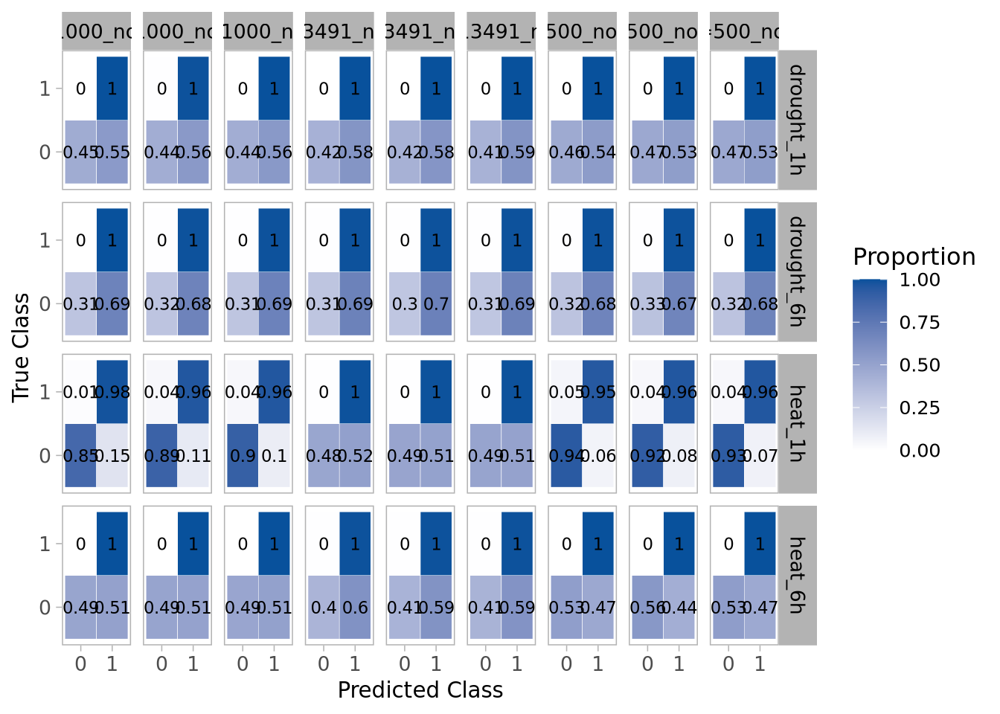
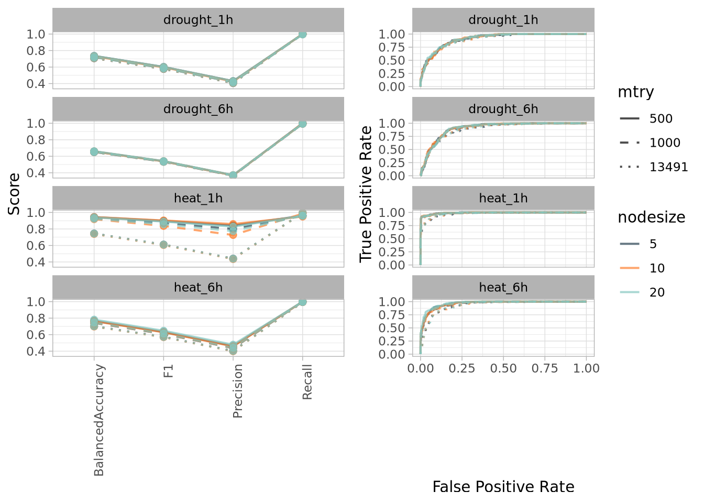
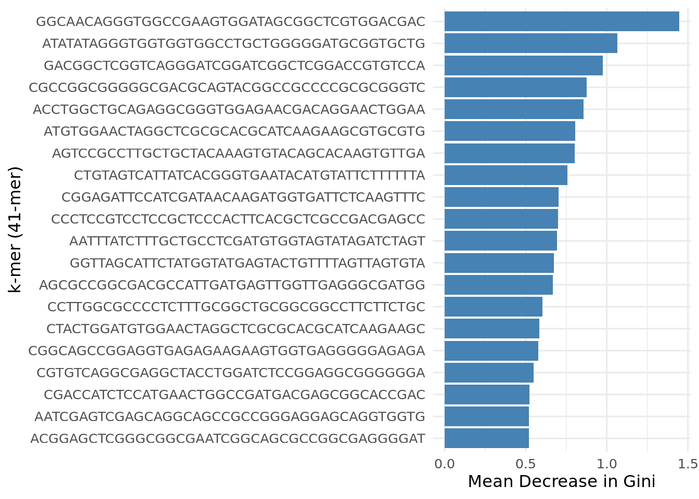

7 Models
7.1 Random Forest
To explore how well the data could be classified, I tested a grid of hyperparameter combinations, varying two core knobs of the Random Forest algorithm:
mtry: Number of variables randomly sampled at each split (set to 500, 1000, and p — where p is the total number of predictors)nodesize: Minimum number of samples per terminal node (set to 5, 10, and 20)
These values were chosen to explore the tradeoff between shallow vs deep trees and narrow vs wide feature subsets.
The models were trained and evaluated using a one-vs-all strategy for four stress conditions. For each condition, one biological replicate was used for training and the other for testing because, as you may recall, I only had two replicates per condition and had to get creative.
Thanks to the 13k+ predictors, 4 stress conditions, and 9 hyperparameter combos, training all models took around 20 hours on 30 parallel workers. Each Random Forest used 500 trees and applied class weights to reduce the classic “I’ll-just-predict-the-majority-class” laziness.
#!/usr/bin/env Rscript
cat("STARTING SCRIPT AT: ", as.character(Sys.time()), "\n")
## Data ----
library(tidyverse)
library(randomForest)
library(doParallel)
library(foreach)
library(stringr)
cat("Loading data...\n")
count_clean2 <- readRDS('~/AGRO920/results/count_clean2.rds')
treat_map <- c(SRR1542404 = "Control", SRR1542405 = "Control",
SRR1542406 = "Drought_1h", SRR1542407 = "Drought_1h",
SRR1542408 = "Drought_6h", SRR1542409 = "Drought_6h",
SRR1542410 = "Heat_1h", SRR1542411 = "Heat_1h",
SRR1542412 = "Heat_6h", SRR1542413 = "Heat_6h",
SRR1542414 = "Drought_Heat_1h",SRR1542415 = "Drought_Heat_1h",
SRR1542416 = "Drought_Heat_6h", SRR1542417 = "Drought_Heat_6h")
y <- data.frame(sample = sub("_.*", "", rownames(count_clean2)),
ps = rownames(count_clean2))
y$treat <- factor(treat_map[y$sample])
set.seed(2310)
sort_data <- data.frame(Sample = sort(unique(y$sample)),
Rep = factor(1:2))
sort_data$Trat <- treat_map[sort_data$Sample]
group1 <- sort_data %>%
group_by(Trat) %>%
slice_sample(n = 1) %>%
ungroup()
y_train <- filter(y, sample %in% group1$Sample)
y_test <- filter(y, !(sample %in% group1$Sample))
train_idx <- rownames(count_clean2) %in% y_train$ps
X_train <- count_clean2[train_idx, , drop = FALSE]
test_idx <- rownames(count_clean2) %in% y_test$ps
X_test <- count_clean2[test_idx, , drop = FALSE]
treatments <- unique(y_train$treat)
labels <- c("drought_1h", "drought_6h", "heat_1h", "heat_6h")
y_multi <- y[, 1:3] %>%
mutate(drought_1h = ifelse(str_detect(treat, "Drought") & str_detect(treat, "1h"), 1, 0),
drought_6h = ifelse(str_detect(treat, "Drought") & str_detect(treat, "6h"), 1, 0),
heat_1h = ifelse(str_detect(treat, "Heat") & str_detect(treat, "1h"), 1, 0),
heat_6h = ifelse(str_detect(treat, "Heat") & str_detect(treat, "6h"), 1, 0))
y_train_multi <- y_multi %>%
filter(sample %in% group1$Sample) %>%
select(-sample, -treat)
y_test_multi <- y_multi %>%
filter(!(sample %in% group1$Sample)) %>%
select(-sample, -treat)
X_train <- as.data.frame(X_train)
X_train$control <- ifelse(y_train$treat == "Control", 1, 0)
X_test <- as.data.frame(X_test)
X_test$control <- ifelse(y_test$treat == "Control", 1, 0)
## Training ----
cat("TRAINING MODELS - START: ", as.character(Sys.time()), "\n")
cl <- makeCluster(30)
registerDoParallel(cl)
mtry_vals <- c(500, 1000, ncol(X_train))
nodesize_vals <- c(5, 10, 20)
grid <- expand.grid(mtry = mtry_vals, nodesize = nodesize_vals)
results_grid <- list()
for (label in labels) {
results_grid[[label]] <- foreach(i = 1:nrow(grid), .packages = "randomForest") %dopar% {
m <- grid$mtry[i]
n <- grid$nodesize[i]
result_model_list <- list()
for (t in treatments) {
idx_test <- which(y_train$treat == t)
idx_train <- which(y_train$treat != t)
X_tmp <- as.data.frame(X_train[idx_train, ])
X_tmp$control <- ifelse(y_train$treat[idx_train] == "Control", 1, 0)
y_tmp <- factor(y_train_multi[[label]][idx_train])
rf_model <- randomForest(x = X_tmp,
y = y_tmp,
ntree = 500,
mtry = m,
nodesize = n,
importance = TRUE,
classwt = c("0" = 1, "1" = 2.5))
pred_prob <- predict(rf_model, newdata = cbind(X_train[idx_test, ], control = ifelse(y_train$treat[idx_test] == "Control", 1, 0)),type = "prob")[, 2]
pred <- ifelse(pred_prob > 0.5, 1, 0)
obs <- y_train_multi[[label]][idx_test]
result_model_list[[t]] <- data.frame(treatment = t,
predicted = pred,
prob = pred_prob,
observed = obs,
mtry = m,
nodesize = n)
}
do.call(rbind, result_model_list)
}
}
cat("TRAINING MODELS - END: ", as.character(Sys.time()), "\n")
## Test ----
cat("TESTING MODELS - START: ", as.character(Sys.time()), "\n")
rf_test_models <- list()
for (label in labels) {
y_train_label <- factor(y_train_multi[[label]])
y_test_label <- factor(y_test_multi[[label]])
rf_test_models[[label]] <- foreach(i = 1:nrow(grid), .packages = "randomForest") %dopar% {
m <- grid$mtry[i]
n <- grid$nodesize[i]
rf_model <- randomForest(x = X_train, y = y_train_label,
ntree = 500,
mtry = m,
nodesize = n,
importance = TRUE,
classwt = c("0" = 1, "1" = 2.5))
pred_prob <- predict(rf_model, X_test, type = "prob")[,2]
pred <- ifelse(pred_prob > 0.5, 1, 0)
acc <- mean(pred == y_test_label)
list(model = rf_model,
mtry = m,
nodesize = n,
acc = acc,
predictions = pred,
predicted_prob = pred_prob,
observed = y_test_label)
}
}
stopCluster(cl)
registerDoSEQ()
cat("TESTING MODELS - END: ", as.character(Sys.time()), "\n")
## Saving ----
RF_final <- list(training = results_grid,
test = rf_test_models)
saveRDS(RF_final, '~/AGRO920/results/RF_final.rds')
cat("SCRIPT FINISHED AT: ", as.character(Sys.time()), "\n")library(caret)
library(purrr)
RF_final <- readRDS("~/AGRO920/results/RF_final.rds")7.1.1 Confusion Matrices
conf_mats <- list()
for (label in names(RF_final$test)) {
conf_mats[[label]] <- list()
for (model in RF_final$test[[label]]) {
obs <- model$observed
pred <- model$predictions
key <- paste0("mtry=", model$mtry, "_node=", model$nodesize)
cm <- table(factor(obs, levels = c(0,1)), factor(pred, levels = c(0,1)))
cm_prop <- prop.table(cm, margin = 1)
conf_mats[[label]][[key]] <- cm_prop
}
}
conf_df <- map_dfr(names(conf_mats), function(label) {
map_dfr(names(conf_mats[[label]]), function(model_id) {
mat <- conf_mats[[label]][[model_id]]
mat %>%
as.data.frame(as.table(mat)) %>%
rename(True = Var1, Pred = Var2, Proportion = Freq) %>%
mutate(Label = label,
Model = model_id)
})
})
rownames(conf_df) <- NULLggplot(conf_df, aes(x = Pred, y = True, fill = Proportion)) +
geom_tile(color = "white") +
scale_fill_gradient(low = "white", high = "#08519c") +
facet_grid(Label ~ Model) +
geom_text(aes(label = round(Proportion, 2)), color = "black", size = 3) +
labs(x = "Predicted Class",
y = "True Class",
fill = "Proportion") +
theme_light(base_size = 12) +
theme(strip.text = element_text(size = 10),
axis.text = element_text(size = 10),
axis.title = element_text(size = 11),
panel.grid = element_blank(),
strip.text.x = element_text(color = 'black'),
strip.text.y = element_text(color = 'black'))
Only
heat_1hbehaved like a as a desired model: consistent, predictable, and easy to classify. The other conditions, especially anything drought-related, turned out to be more… dramatic. In many cases, models predicted everything as positive. That’s great for recall, but not so great for precision or balanced accuracy. Basically: if the model always say “0” or “1” it is not technically wrong, but it is not very helpful either.
7.1.2 Performance Metrics and ROC Curves
Each model was evaluated using four metrics: Balanced Accuracy, F1-Score, Precision, and Recall.
compute_metrics <- function(obs, pred) {
cm <- confusionMatrix(factor(pred), factor(obs), positive = "1")
out <- cm$byClass[c("Balanced Accuracy", "F1", "Precision", "Recall")]
return(as.list(out))
}
# Test metrics
test_metrics <- map_dfr(names(RF_final$test), function(label) {
map_dfr(RF_final$test[[label]], function(model) {
m <- compute_metrics(model$observed, model$predictions)
tibble(Label = label,
mtry = model$mtry,
nodesize = model$nodesize,
Phase = "test",
BalancedAccuracy = m$`Balanced Accuracy`,
F1 = m$F1,
Precision = m$Precision,
Recall = m$Recall)
})
})
test_metrics <- test_metrics %>%
select(Label, mtry, nodesize, BalancedAccuracy, F1, Precision, Recall) %>%
pivot_longer(cols = c(BalancedAccuracy, F1, Precision, Recall),
names_to = "Metric", values_to = "Value")plot_met <-
ggplot(test_metrics, aes(x = Metric, y = Value,
group = interaction(mtry, nodesize),
color = factor(nodesize),
linetype = factor(mtry))) +
geom_line(linewidth = .7, alpha = 0.7) +
geom_point(size = 2, alpha = 0.7) +
facet_wrap(~ Label, ncol = 1) +
theme_light() +
labs(y = "Score", x = '',
color = "Nodesize",
linetype = "Mtry") +
theme(axis.text.x = element_text(angle = 90, hjust = 1),
strip.text = element_text(color = 'black'),
legend.position = 'none') +
scale_color_manual(values = c('#233d4d', '#fe7f2d', '#83c5be')) +
scale_linetype_manual(values = c("500" = "solid", "1000" = "dashed", "13491" = "dotted")) library(pROC)
library(tibble)
roc_all <- lapply(names(RF_final$test), function(label) {
models <- RF_final$test[[label]]
rocs <- lapply(seq_along(models), function(i) {
x <- models[[i]]
r <- tryCatch({
roc_obj <- roc(response = x$observed,
predictor = x$predicted_prob,
quiet = TRUE,
levels = c(0, 1),
direction = "<")
tibble(Label = label,
mtry = x$mtry,
nodesize = x$nodesize,
specificity = rev(roc_obj$specificities),
sensitivity = rev(roc_obj$sensitivities),
auc = as.numeric(auc(roc_obj)),
model_id = paste0("mtry=", x$mtry, "_nodesize=", x$nodesize))
})
return(r)
})
bind_rows(rocs)
})
roc_df <- bind_rows(roc_all)
roc_df <- mutate(roc_df,
mtry = as.factor(mtry),
nodesize = as.factor(nodesize))plot_roc <-
ggplot(roc_df, aes(x = 1 - specificity,
y = sensitivity,
color = factor(nodesize),
linetype = factor(mtry))) +
geom_line(alpha = 0.7, linewidth = 0.7) +
facet_wrap(~ Label, ncol = 1) +
theme_light() +
labs(x = "False Positive Rate",
y = "True Positive Rate",
color = "nodesize",
linetype = "mtry") +
scale_color_manual(values = c('#233d4d', '#fe7f2d', '#83c5be')) +
scale_linetype_manual(values = c("500" = "solid", "1000" = "dashed", "13491" = "dotted")) +
theme(strip.text = element_text(color = 'black'))library(gridExtra)##
## Attaching package: 'gridExtra'## The following object is masked from 'package:dplyr':
##
## combinelibrary(grid)
g1 <- ggplotGrob(plot_met)
g2 <- ggplotGrob(plot_roc)
max_height <- grid::unit.pmax(g1$heights, g2$heights)
g1$heights <- max_height
g2$heights <- max_height
grid.arrange(g1, g2, ncol = 2)
Once again,
heat_1hattract attention with high and stable performance across the board. Drought conditions, on the other hand, gave the models a hard time, often pushing them into the “just predict one class and hope for the best” corner. The result? High recall, but poor precision and disappointing F1-scores.heat_6hsat somewhere in the middle: still sensitive, but less specific.These patterns suggest that early heat stress triggers a clear and strong transcriptomic response, easily picked up at the k-mer level. Drought, however, might be slower to kick in or more tangled with noise, making it harder to pin down with the current approach.
7.1.3 Important k-mers associated with heat stress (1h)
To look behind the scenes and see which sequences were pulling the strings, I extracted the top 20 k-mers ranked by Mean Decrease in Gini from the best-performing Random Forest trained on heat_1h.
best_model <- RF_final$test[["heat_1h"]][[which.max(sapply(RF_final$test[["heat_1h"]], function(x) x$acc))]]$model
imp <- as.data.frame(best_model$importance)
imp_kmers <- imp %>%
rownames_to_column("kmer") %>%
filter(kmer != "control") %>%
arrange(desc(MeanDecreaseGini))
top_kmers <- imp_kmers %>% slice_max(MeanDecreaseGini, n = 20)
ggplot(top_kmers, aes(x = reorder(kmer, MeanDecreaseGini), y = MeanDecreaseGini)) +
geom_col(fill = "steelblue") +
coord_flip() +
theme_minimal(base_size = 12) +
labs(x = "k-mer (41-mer)",
y = "Mean Decrease in Gini")
**Unfortunately, I didn’t have time to validate whether these star k-mers actually map to known genes or differentially expressed regions. And I’m genuinely frustrated about that. It would have made the story stronger, more complete and biologically grounded. That said, these k-mers are ready for follow-up work: alignment to reference transcripts, GO enrichment, or anything else that helps explain why the model liked them so much. If I had more time, this would absolutely be next.